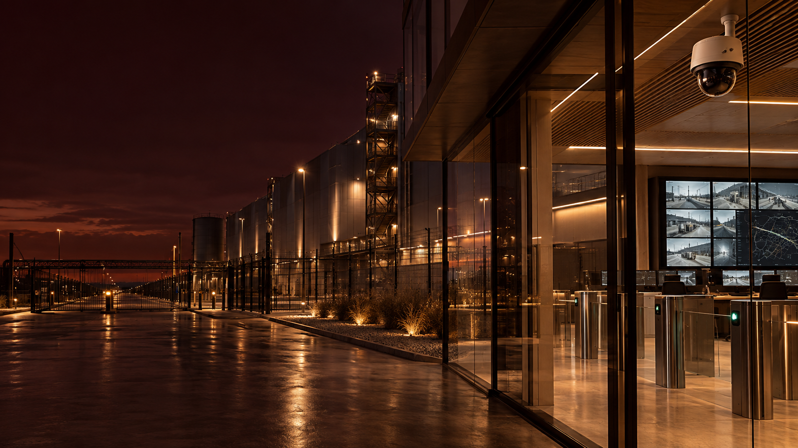

Seguridad y control
Videovigilancia, control de accesos, alarmas, analítica y centros de monitoreo para entornos críticos.
↗
Soluciones para proyectos
Diseñamos e integramos soluciones tecnológicas para operaciones que no pueden detenerse.
HABLAR CON UN EJECUTIVOTrabajamos junto a equipos técnicos, áreas de compras y responsables de infraestructura para llevar una necesidad compleja a una implementación sólida. Con una mirada integral, desde el relevamiento hasta la puesta en marcha.
Soluciones seleccionadas y coordinadas bajo una única mirada de proyecto.
Videovigilancia, control de accesos, alarmas, analítica y centros de monitoreo para entornos críticos.
↗Soluciones para operación, recepción, circulación y experiencia en edificios, retail e instituciones.
↗Pantallas interactivas, cartelería digital y soportes de información para espacios de alto tránsito.
↗Entendemos el contexto, los riesgos, las personas y la operación detrás del pedido.
Diseñamos una solución viable, escalable y alineada a objetivos técnicos y de negocio.
Seleccionamos tecnología y acompañamos cada instancia del proyecto.
Trabajamos para que la puesta en marcha sea ordenada y la solución quede lista para operar.
Integramos proyectos de seguridad electrónica, control de accesos, videovigilancia, automatización y comunicación visual para empresas, industrias e instituciones.
Sí. Abordamos consultas de industrias, energía, petróleo, agro, refinerías, gasoductos y organizaciones con requisitos operativos exigentes.
El primer paso es entender la necesidad. A partir de allí, proponemos una solución técnica que contemple alcance, integración y una implementación ordenada.
Puede escribirnos por WhatsApp con una breve descripción de la necesidad, el sector y la organización. Nuestro equipo de proyectos le dará una primera orientación.
Las pantallas interactivas son una de las herramientas que podemos integrar cuando el proyecto necesita transformar la experiencia de atención o comunicación.
Conocer pantallas interactivas ↗Cuéntenos brevemente qué necesita resolver. Nuestro equipo recibirá su consulta para darle una primera orientación.